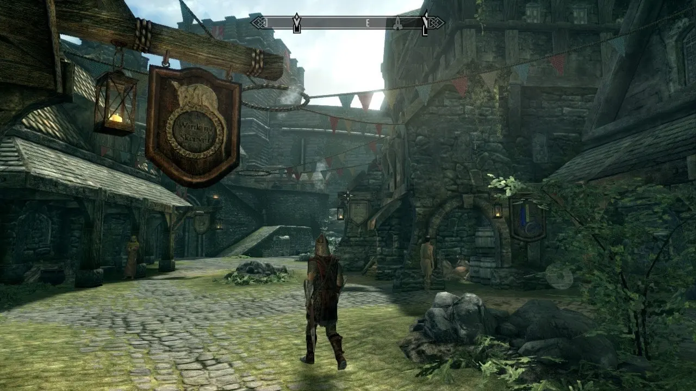

Razones para Jugar Skyrim
- Mundo Abierto: Explora un vasto mundo lleno de paisajes impresionantes, ciudades bulliciosas y mazmorras peligrosas lor.
 - Historias Envolventes: Sumérgete en emocionantes historias llenas de intrigas, misterios y personajes memorables.

- Mods: Experimenta con una infinidad de mods creados por la comunidad para personalizar y mejorar tu experiencia de juego.